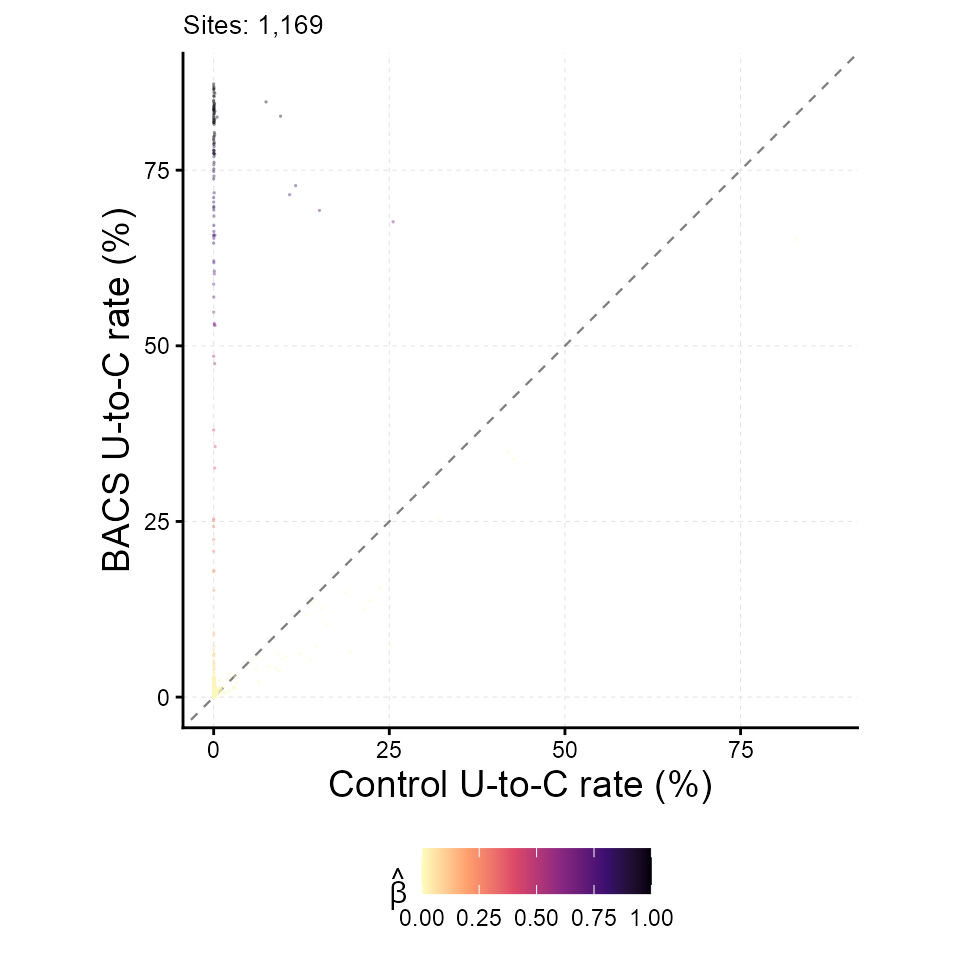
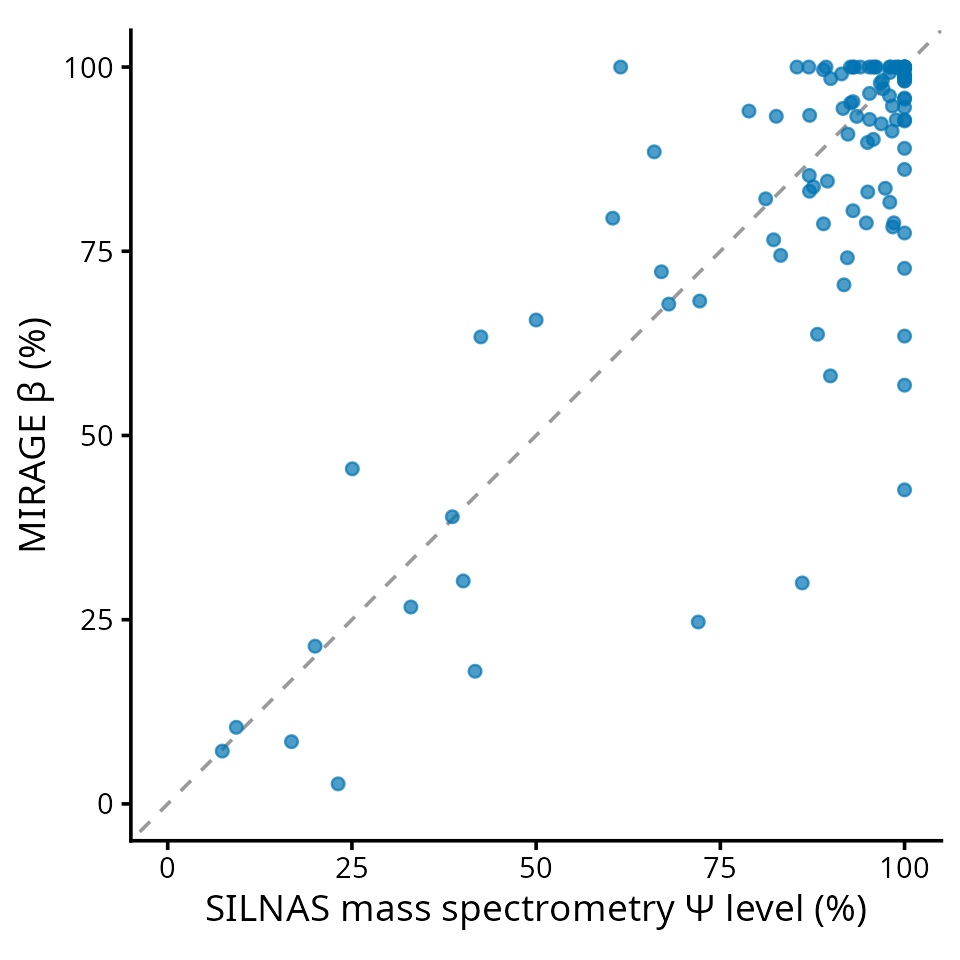

MIRAGE RNA Modification Tutorial (BACS pseudouridine)
Yang Li
Source:vignettes/mirage-bacs.Rmd
mirage-bacs.RmdThis tutorial shows how MIRAGE quantifies an RNA modification from a mutation-encoded modification assay. The example is BACS (bisulfite-free absolute and quantitative sequencing of pseudouridine), in which pseudouridine (Ψ) is read out as an apparent U-to-C substitution while unmodified uridines remain largely unchanged. Under MIRAGE the model parameters take a direct chemical meaning:
| MIRAGE parameter | meaning in BACS |
|---|---|
beta_est (β) |
fraction of RNA molecules carrying Ψ at the site, i.e. the Ψ stoichiometry |
lambda1 (γ₁) |
on-target Ψ-to-C conversion rate of a fully modified site |
lambda2 (γ₂) |
background U-to-C conversion rate at unmodified uridines |
kappa_est (κ) |
reference-allele fraction at heterozygous or allele-mixed sites |
Because β is expressed on the molecule scale after removing background, sequencing error, and allele mixing, MIRAGE returns an absolute modification level without a synthetic calibration curve.
The Example Data
The package ships a small, complete count table built from public HeLa BACS small-RNA libraries (Gene Expression Omnibus GSE241849). Reads were aligned to the human cytosolic rRNA references (RefSeq NR_003286.4 18S, NR_003287.4 28S, NR_003285.3 5.8S), and every uridine position with sufficient depth was kept. For each uridine, the treated (BACS) T and C counts of two replicates were pooled, and the untreated control libraries were pooled as the matched control.
count_table <- read.delim(
system.file("extdata", "bacs_hela_cyrRNA_counts.tsv", package = "MIRAGE")
)
nrow(count_table)
#> [1] 1169
head(count_table, 5)
#> pos motif type treated_fixed_count treated_depth
#> 1 NR_003285.3_RNA5_8SN5_100 NNUNN Psi 3197 3209
#> 2 NR_003285.3_RNA5_8SN5_110 NNUNN Psi 3744 3782
#> 3 NR_003285.3_RNA5_8SN5_111 NNUNN Psi 3557 3592
#> 4 NR_003285.3_RNA5_8SN5_123 NNUNN Psi 3565 3583
#> 5 NR_003285.3_RNA5_8SN5_124 NNUNN Psi 3414 3602
#> control_fixed_count control_depth
#> 1 2926 2927
#> 2 3128 3130
#> 3 2941 2941
#> 4 2658 2659
#> 5 2627 2627The seven required columns are pos, motif,
type, treated_fixed_count,
treated_depth, control_fixed_count, and
control_depth. fixed_count is the number of
reads that still show the reference base (here, T); MIRAGE models
1 - fixed_count / depth as the observed conversion rate.
The site identifier pos can be any unique string; here it
is <RefSeq accession>_<position>.
motif and type are placeholders because the
empirical (motif-free) model does not use motif priors.
A second table records which of these uridines are known Ψ sites according to an orthogonal mass-spectrometry (SILNAS) map of the human ribosome, together with the measured Ψ occupancy. It is used only for evaluation below.
silnas <- read.delim(
system.file("extdata", "bacs_hela_cyrRNA_silnas.tsv", package = "MIRAGE")
)
table(silnas$silnas_psi)
#>
#> 0 1
#> 1065 104
head(silnas[silnas$silnas_psi == 1, ], 4)
#> pos rRNA position silnas_psi silnas_psi_pct
#> 23 NR_003285.3_RNA5_8SN5_55 5.8S 55 1 60.39473
#> 27 NR_003285.3_RNA5_8SN5_69 5.8S 69 1 61.47077
#> 41 NR_003286.4_RNA18SN5_1004 18S 1004 1 97.08017
#> 52 NR_003286.4_RNA18SN5_1045 18S 1045 1 91.64762Infer Ψ Stoichiometry With MIRAGE
Run the empirical model. lambda1 = "auto" estimates the
on-target conversion rate from the highest-signal candidate sites, and
bg.method = "lrt" uses the likelihood-ratio test to
separate background uridines from candidate Ψ sites when estimating the
background rate.
library(MIRAGE)
#> Loading required package: doParallel
#> Loading required package: foreach
#> Loading required package: iterators
#> Loading required package: parallel
#> Loading required package: dplyr
#>
#> Attaching package: 'dplyr'
#> The following objects are masked from 'package:stats':
#>
#> filter, lag
#> The following objects are masked from 'package:base':
#>
#> intersect, setdiff, setequal, union
bacs_res <- estimate_inference_with_empirical(
chr.info = count_table[, c("pos", "motif", "type")],
treatment_fixed_count = count_table$treated_fixed_count,
control_fixed_count = count_table$control_fixed_count,
treatment_depth = count_table$treated_depth,
control_depth = count_table$control_depth,
delta = 0.001,
depth.cutoff = 20,
homo.cutoff = 0.99,
lambda1 = "auto",
bg.method = "lrt",
bg.target = "treatment",
highly.methyl.cutoff = 0.95,
seed = 123,
thread = tutorial_threads
)
#> Considering 1121 (95.89%) sites as homozygous...
#> Hyper-thread registered: TRUE
#> Using 2 threads to make homo initial test...
#> Considering 275 (24.53%) sites as background (homozygous sites only)...
#> Hyper-thread registered: TRUE
#> Using 2 threads to make homo final test...
#> Considering 806 (71.9%) sites as high-signal site candidates (homozygous sites only)...
#> Hyper-thread registered: TRUE
#> Using 2 threads to make homo beta estimation...
#> Hyper-thread registered: TRUE
#> Using 2 threads to make heter beta estimation...
data.frame(
n_homosites = nrow(bacs_res$homosites),
n_hetersites = nrow(bacs_res$hetersites),
lambda1 = bacs_res$lambda1,
lambda2 = bacs_res$lambda2
)
#> n_homosites n_hetersites lambda1 lambda2
#> 1 1121 48 0.8334232 0.001407247The estimated on-target conversion rate (γ₁ ≈ 0.83) agrees with the spike-in-derived conversion efficiency reported for BACS, and the background rate (γ₂ ≈ 0.14 %) is the chemistry background at unmodified uridines. Both were learned from the data alone.
Inspect The Output
homosites holds sites whose control sample looks
homozygous for the reference base; hetersites holds sites
routed to the allele-aware model, which additionally reports
kappa_est.
head(
bacs_res$homosites[
order(-bacs_res$homosites$beta_est),
c("pos", "treatment_fixed_rate", "control_fixed_rate", "beta_est", "lrt_fdr")
],
6
)
#> pos treatment_fixed_rate control_fixed_rate beta_est
#> 27 NR_003285.3_RNA5_8SN5_69 0.1450520 0.9992167 1
#> 54 NR_003286.4_RNA18SN5_105 0.1389313 0.9996070 1
#> 55 NR_003286.4_RNA18SN5_1056 0.1598015 1.0000000 1
#> 87 NR_003286.4_RNA18SN5_119 0.1660448 0.9981722 1
#> 206 NR_003286.4_RNA18SN5_1643 0.1555891 0.9987326 1
#> 359 NR_003286.4_RNA18SN5_651 0.1618785 0.9995564 1
#> lrt_fdr
#> 27 0
#> 54 0
#> 55 0
#> 87 0
#> 206 0
#> 359 0
head(
bacs_res$hetersites[
order(-bacs_res$hetersites$beta_est),
c("pos", "treatment_fixed_rate", "control_fixed_rate", "beta_est", "kappa_est", "lrt_fdr")
],
4
)
#> pos treatment_fixed_rate control_fixed_rate beta_est
#> 993 NR_003287.4_RNA28SN5_4471 0.1528158 0.9255110 1.00000
#> 41 NR_003286.4_RNA18SN5_1004 0.1731629 0.9047899 0.97054
#> 370 NR_003286.4_RNA18SN5_686 0.2719745 0.8833585 0.83047
#> 836 NR_003287.4_RNA28SN5_3734 0.2849015 0.8918861 0.81658
#> kappa_est lrt_fdr
#> 993 0.92635 0
#> 41 0.90566 0
#> 370 0.88420 0
#> 836 0.89274 0Save the results as you would in a real analysis:
out_dir <- file.path(tempdir(), "mirage_bacs_output")
dir.create(out_dir, showWarnings = FALSE)
saveRDS(bacs_res, file.path(out_dir, "mirage_result.rds"))
write.table(bacs_res$homosites, file.path(out_dir, "homosites.tsv"),
sep = "\t", quote = FALSE, row.names = FALSE)
write.table(bacs_res$hetersites, file.path(out_dir, "hetersites.tsv"),
sep = "\t", quote = FALSE, row.names = FALSE)
list.files(out_dir)
#> [1] "hetersites.tsv" "homosites.tsv" "mirage_result.rds"Diagnostic Scatter
plot_signal_scatter() is a one-line diagnostic: each
uridine is placed by its control and treatment conversion rate and
shaded by the inferred stoichiometry beta_est. Ψ sites line
up on the left edge (no conversion in the control) with β tracking the
BACS conversion rate.
plot_signal_scatter(
bacs_res,
color_by = "beta_est",
xlab = "Control U-to-C rate (%)", ylab = "BACS U-to-C rate (%)"
)
Call Ψ Sites And Compare With Mass Spectrometry
A practical Ψ call combines significance (lrt_fdr) with
a minimum stoichiometry (beta_est). Compare the calls with
the SILNAS annotation.
sites <- rbind(
cbind(bacs_res$homosites[, c("pos", "beta_est", "lrt_fdr")], site_class = "homo"),
cbind(bacs_res$hetersites[, c("pos", "beta_est", "lrt_fdr")], site_class = "heter")
)
sites <- merge(sites, silnas, by = "pos")
sites$called <- sites$lrt_fdr < 0.05 & sites$beta_est >= 0.05
table(SILNAS_psi = sites$silnas_psi, MIRAGE_call = sites$called)
#> MIRAGE_call
#> SILNAS_psi FALSE TRUE
#> 0 1052 13
#> 1 1 103For the annotated Ψ sites, MIRAGE β can be compared directly with the mass-spectrometry occupancy because both are on the molecule scale.
psi <- sites[sites$silnas_psi == 1, ]
psi$beta_pct <- 100 * psi$beta_est
cor(psi$beta_pct, psi$silnas_psi_pct)
#> [1] 0.8095563
library(ggplot2)
ggplot(psi, aes(x = silnas_psi_pct, y = beta_pct)) +
geom_abline(slope = 1, intercept = 0, linetype = "dashed", colour = "gray60") +
geom_point(size = 1.8, alpha = 0.7, colour = "#0072B2") +
coord_equal(xlim = c(0, 100), ylim = c(0, 100)) +
labs(x = "SILNAS mass spectrometry Ψ level (%)",
y = "MIRAGE β (%)") +
theme_classic(base_size = 14)
Adapting To Your Own Modification Data
- Build a per-site table with the seven columns above from your
treated and control (or in-vitro-transcribed) pileups:
fixed_countis the count of the unconverted reference base,depthis the total coverage. - Choose
depth.cutoffaccording to library depth. Keephomo.cutoff = 0.99unless your control is known to carry conversion at unmodified sites. - Use
lambda1 = "auto"unless you have a defined on-target conversion rate (for example from spike-ins), in which case pass it as a number. - Filter results on
beta_estand one FDR column consistent withbg.method.
Session Information
sessionInfo()
#> R version 4.5.3 (2026-03-11)
#> Platform: x86_64-conda-linux-gnu
#> Running under: Ubuntu 24.04.4 LTS
#>
#> Matrix products: default
#> BLAS/LAPACK: /home/yangli/software/micromamba/envs/mirage-r/lib/libopenblasp-r0.3.34.so; LAPACK version 3.12.0
#>
#> locale:
#> [1] LC_CTYPE=C.UTF-8 LC_NUMERIC=C LC_TIME=C.UTF-8
#> [4] LC_COLLATE=C.UTF-8 LC_MONETARY=C.UTF-8 LC_MESSAGES=C.UTF-8
#> [7] LC_PAPER=C.UTF-8 LC_NAME=C LC_ADDRESS=C
#> [10] LC_TELEPHONE=C LC_MEASUREMENT=C.UTF-8 LC_IDENTIFICATION=C
#>
#> time zone: America/Chicago
#> tzcode source: system (glibc)
#>
#> attached base packages:
#> [1] parallel stats graphics grDevices utils datasets methods
#> [8] base
#>
#> other attached packages:
#> [1] ggplot2_4.0.3 MIRAGE_0.6.0 dplyr_1.2.1 doParallel_1.0.17
#> [5] iterators_1.0.14 foreach_1.5.2
#>
#> loaded via a namespace (and not attached):
#> [1] gtable_0.3.6 jsonlite_2.0.0 compiler_4.5.3 tidyselect_1.2.1
#> [5] jquerylib_0.1.4 scales_1.4.0 systemfonts_1.3.2 textshaping_1.0.5
#> [9] yaml_2.3.12 fastmap_1.2.0 R6_2.6.1 labeling_0.4.3
#> [13] generics_0.1.4 knitr_1.51 htmlwidgets_1.6.4 tibble_3.3.1
#> [17] desc_1.4.3 RColorBrewer_1.1-3 bslib_0.12.0 pillar_1.11.1
#> [21] rlang_1.3.0 cachem_1.1.0 xfun_0.60 S7_0.2.2
#> [25] fs_2.1.0 sass_0.4.10 otel_0.2.0 viridisLite_0.4.3
#> [29] cli_3.6.6 withr_3.0.3 pkgdown_2.2.1 magrittr_2.0.5
#> [33] digest_0.6.39 grid_4.5.3 lifecycle_1.0.5 vctrs_0.7.3
#> [37] evaluate_1.0.5 glue_1.8.1 farver_2.1.2 codetools_0.2-20
#> [41] ragg_1.5.2 rmarkdown_2.31 tools_4.5.3 pkgconfig_2.0.3
#> [45] htmltools_0.5.9